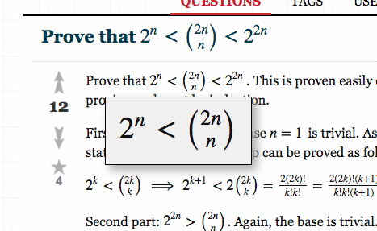
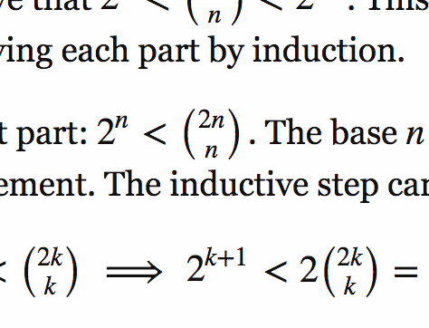
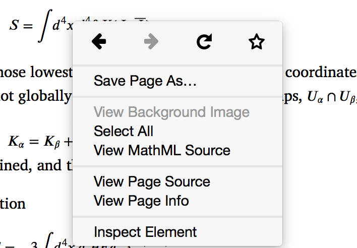
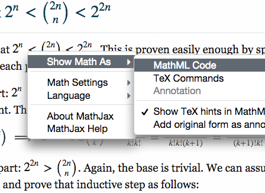

The Florian MathUI project
A universal math wrapper for the web
Jan Marthedal Rasmussen, Design Science
Math on the web
- MathML (research blog)
- Images (Wordpress blog)
- HTML+images (Wikipedia)
- MathJax (math.stackexchange.com)
- KaTeX+MathJax (personal blog)
Zooming
(or "where are my glasses?")
MathJax zoom
Browser zoom
Copying
(or "don't make me recreate it!")
Firefox "View MathML Source"
MathJax "Show Math As"
Browser hacking